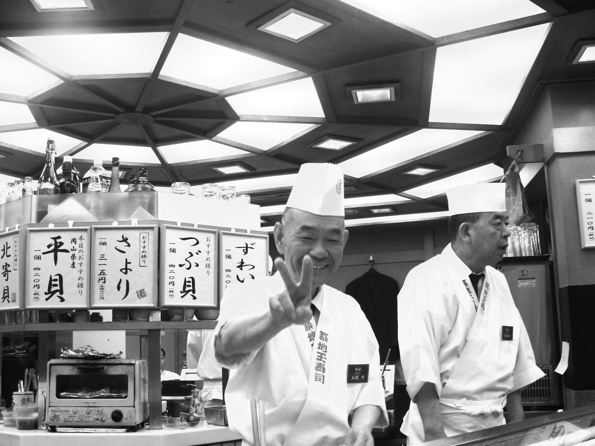

創業の時代 〜 昭和初期
菊は、昭和初期、謙虚な寿司職人が夢と情熱を胸に、小さな寿司屋としてスタートしました。当初は地元の人々に親しまれ、新鮮で手作りの寿司が口コミで評判を呼びました。その謙虚なサービスと伝統的な味わいが、地域の人々の心に深く根付いていきました。

菊は、昭和初期、謙虚な寿司職人が夢と情熱を胸に、小さな寿司屋としてスタートしました。当初は地元の人々に親しまれ、新鮮で手作りの寿司が口コミで評判を呼びました。その謙虚なサービスと伝統的な味わいが、地域の人々の心に深く根付いていきました。
昭和後半になると、2代目のシェフが登場し、伝統の技法を継承しつつも、新しいアイディアと料理への情熱を加え、店のメニューや雰囲気に変革をもたらしました。地元以外からも注目を浴び、寿司職人たちはますます高みを目指して技術を磨きました。その結果、寿司屋は全国的な名声を得るまでに成長しました。
現代において、菊は歴史を背負いながらも、新しい時代に適応し続けています。三代目のシェフは、最高品質の食材と伝統の技術を組み合わせ、独自の味わいを生み出しています。店内は、伝統とモダンなデザインが見事に調和した雰囲気で、地元のコミュニティと観光客の支持を集めています。
菊は、これからも伝統を大切にしつつ、新しい挑戦に果敢に立ち向かっていくことを誓っています。地元の食材へのこだわりや、お客様に特別なひとときを提供する情熱は、これからも受け継がれ、寿司屋の歴史は未知の領域へと広がっていくでしょう。